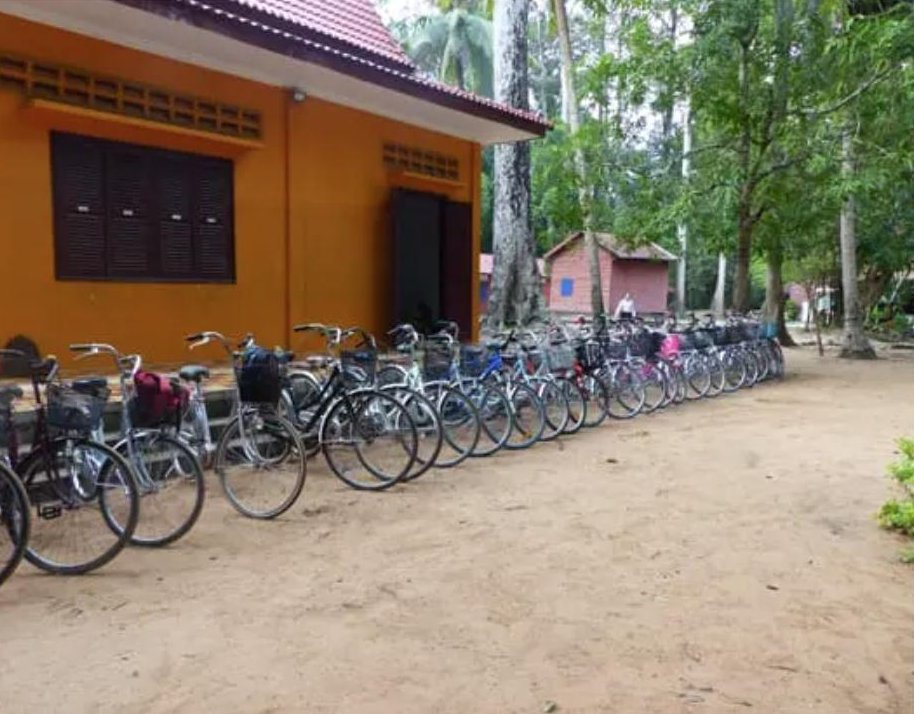
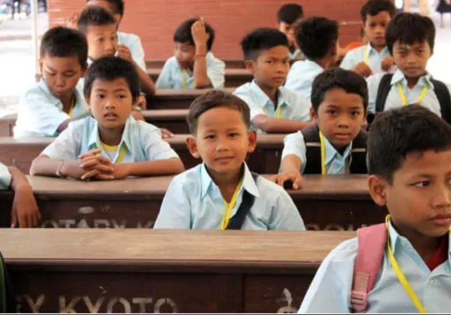

การรักษานักเรียนไว้ในระบบการศึกษาระยะยาว
การสนับสนุนเพียงหนึ่งภาคเรียนไม่ค่อยเปลี่ยนแปลงสถานการณ์ของครอบครัวได้ โครงการนี้คือการอยู่เคียงข้างนักเรียนนานเท่าที่จำเป็น

ความเสี่ยงในการออกจากโรงเรียนไม่ได้จบลงหลังจากปีที่ดี
สถานการณ์ของครอบครัวเปลี่ยนแปลงไปในแต่ละปี — ผลผลิตที่ไม่ดี การเจ็บป่วย พี่น้องที่ต้องการการสนับสนุนเช่นกัน นักเรียนที่ได้เรียนอย่างปลอดภัยในปีที่แล้วอาจตกอยู่ในความเสี่ยงอีกครั้งในปีถัดไป การช่วยเหลือระยะสั้นอาจช่วยให้นักเรียนผ่านพ้นวิกฤตหนึ่งครั้งได้ แต่ไม่ได้ขจัดความเสี่ยงที่แฝงอยู่ซึ่งดึงนักเรียนออกจากโรงเรียนทีละชั้น
Entraide Asia มองว่าการรักษาการศึกษาระยะยาวเป็นสิ่งที่ต้องบริหารจัดการอย่างจริงจัง ไม่ใช่สิ่งที่ควรถือเป็นเรื่องแน่นอน โดยติดตามนักเรียนและครอบครัวเดิมปีแล้วปีเล่า แทนที่จะให้ทุนเพียงหนึ่งปีการศึกษาแล้วจบไป
การสนับสนุนระยะหลายปีมีลักษณะอย่างไร
เงินอุดหนุนครัวเรือน
การจ่ายเงินสม่ำเสมอในจำนวนที่พอเหมาะให้แก่ครอบครัว เพื่อไม่ให้การศึกษาของเด็กแข่งขันโดยตรงกับงบประมาณครัวเรือนในแต่ละเดือน
การเดินทาง ทุก ๆ ปี
จักรยานและการสนับสนุนการเดินทางที่ต่ออายุขึ้นเรื่อย ๆ เมื่อนักเรียนเลื่อนชั้นในระดับมัธยมศึกษา ซึ่งระยะทางไปโรงเรียนมักเพิ่มขึ้น
การติดตามด้วยตนเอง
Christophe และพันธมิตรท้องถิ่นติดตามนักเรียนที่ได้รับการอุปถัมภ์โดยตรง เพื่อจับสัญญาณปัญหา — การเจ็บป่วย ความยากลำบากในครอบครัว ผลการเรียนที่ลดลง — ก่อนที่จะกลายเป็นเหตุผลให้ออกจากโรงเรียน
ไปจนถึงระดับมหาวิทยาลัย
สำหรับนักเรียนที่มีคุณสมบัติ การสนับสนุนขยายต่อจากมัธยมศึกษาไปจนถึงมหาวิทยาลัยหรือการศึกษาสายอาชีพ แทนที่จะหยุดลงเมื่อจบการศึกษา

การสนับสนุนระยะยาวหมายถึงการกลับไปตรวจสอบ ไม่ใช่การบริจาคเพียงครั้งเดียวแล้วจบไป
Bayon School และนักเรียนที่ได้รับการอุปถัมภ์เป็นรายบุคคลในเมียนมา
ที่ Bayon School นักเรียนมัธยมได้รับจักรยานและเงินอุดหนุนครัวเรือนที่ต่ออายุทุกปี ไม่ใช่เพียงครั้งเดียว Christophe ใช้แนวทางเดียวกันนี้กับนักเรียนที่เขาอุปถัมภ์เป็นรายบุคคลในเมียนมา — การสนับสนุนที่ดำเนินต่อไปตราบเท่าที่นักเรียนยังคงเรียนอยู่ โดยตรวจสอบผ่านการเยี่ยมชมโดยตรงแทนที่จะเป็นการให้ทุนเพียงครั้งเดียว
ดูเรื่องราวฉบับเต็ม →
ข้อผูกพันที่วัดเป็นปี ไม่ใช่ภาคเรียน
เมื่อเป็นไปได้ การสนับสนุนจะถูกจัดโครงสร้างให้เป็นข้อผูกพันต่อเนื่องกับนักเรียนหรือโรงเรียนที่เจาะจง แทนที่จะเป็นของขวัญเพียงครั้งเดียว เพราะความเสี่ยงในการออกจากโรงเรียนมักไม่หายไปหลังจากได้รับความช่วยเหลือเพียงหนึ่งภาคเรียน การมีส่วนร่วมอย่างต่อเนื่องปีแล้วปีเล่าคือสิ่งที่รักษานักเรียนไว้ในระบบการศึกษาจนกระทั่งสำเร็จการศึกษาได้จริง